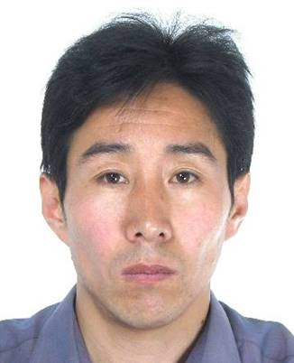
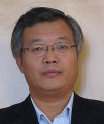
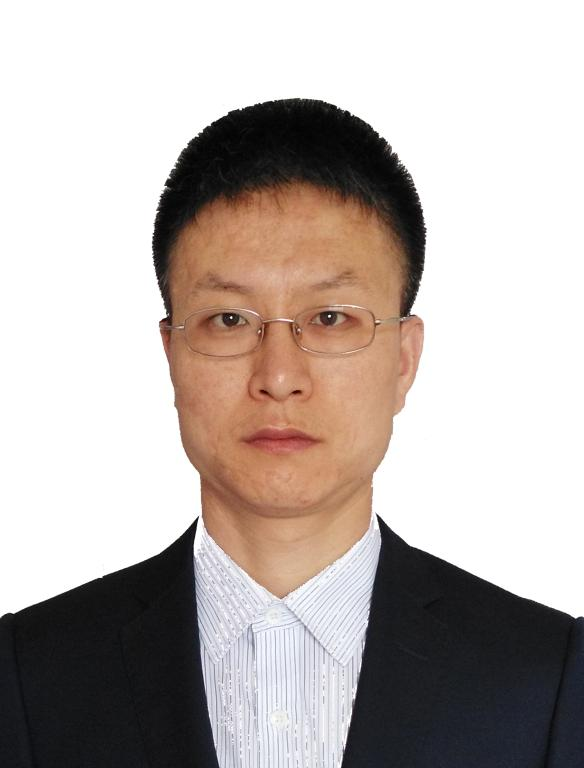

高光来教授的主要研究方向是模式识别与人工智能。他主要精力集中在面向蒙古文的智能信息处理技术的研究领域上，涉及文字识别、语音识别、图像识别、计算智能和数据挖掘。
他主持了国家“863”计划1项、国家 973 计划前期研究专项课题1项、国家自然科学基金项目4项，内蒙古自治区级项目10多项，电子发展基金项目4项。他的主要科研成果获得内蒙古自治区科技进步二等奖3项、三等奖1项。在重要学术期刊和国内外学术会议上发表了60余篇论文。主编或参编的5部教材，在清华大学和内蒙古大学出版社出版发行。
1997年，高光来教授作为主要完成人完成的“蒙文矢量字库及蒙汉文混合排版系统”项目通过内蒙古科委主持的鉴定，评价为国内领先，该成果荣获1998年度内蒙古自治区科技进步二等奖，1999年获得了国家软件著作版权。该系统是我国较早面向办公自动化且能同时处理蒙汉文的文字处理系统，所取得的蒙文矢量字库、蒙文输入输出、蒙文编码等核心技术为计算机学院后续开发的蒙文信息系统奠定了基础，也使蒙文进入计算机的关键性问题和难点得到了解决。该系统在内蒙古自治区各盟市得到推广和使用，为少数民族地区的文化教育事业的发展做出了贡献。
高光来教授率先将人工智能与蒙古文信息处理相结合，开展了蒙古文信息智能化处理的研究，并先后主持完成国家自然科学基金“多字体印刷蒙文字识别技术的研究”和内蒙古自然科学基金项目“印刷蒙文字识别技术的研究”。经过两年多的攻关，解决了蒙古文连写难以切分等一系列难题，取得了突破性进展。科研成果“印刷蒙文识别技术的研究”在2001年通过了内蒙古科技厅主持的鉴定，评价为国际先进水平，并荣获2003年度内蒙古自治区科技进步二等奖。鉴定委员会主任、中国科学院自动化所所长谭铁牛博士对该成果给予了很高的评价。该系统是我国第一个能识别蒙古文的OCR系统，也是我国第一个少数民族语言的OCR系统。2004年他又主持国家自然科学基金项目“联机手写蒙古文字识别的研究”，使蒙古文文字识别的研究进一步深化。
2003年，高光来教授主持了国家“863”计划项目“蒙古语语音识别技术的研究”，成为自治区为数不多的“863”项目主持人。经过近3年的系统研究，课题组在蒙古语连续语音库、蒙古语语言信息资源库、蒙古语连续语音识别器等方面取得了独创性成果，使蒙古文信息处理达到了国际前沿水平，2006年该项目顺利通过了国家“863计划”计算机软硬件技术主题专家组的验收。
在教育教学研究方面，高光来教授的成绩也十分突出。作为主要参加人，他完成的教学成果“计算机学科建设及教学改革的探索与实践”1997年获高等学校自治区级优秀教学成果二等奖。他参加编写的教材《汉字关系数据库管理系统FoxBASE +V2.10原理及应用》 及《电子计算机应用基础》分别获得1996 年内蒙古自治区普通高等学校优秀教材二等奖和三等奖。1998年，由于他在教学、科研方面成绩显著，获霍英东教育基金会颁发的第6届全国高等学校青年教师奖（教学类）三等奖，该年度内蒙古自治区仅有两名青年教师获此殊荣。
高光来教授1997年开始招收计算机应用技术硕士研究生，已招收了50多名硕士研究生，毕业40多名。2007年又开始了博士研究生的培养工作已招收博士研究生13名博士研究生，毕业6名。为国家和自治区培养了急需的高层次计算机人才。
鉴于他的学术造诣和影响，高光来教授先后当选为中国人工智能学会机器感知与虚拟现实专委会委员、中国图形图象学会多媒体技术专委会委员、全国高等学校计算机教育研究会常务理事、教育部高等学校教学指导委员会计算机科学与技术专业分委会委员。2006年又当选为内蒙古计算机学会理事长。
our team
巩政，现任内蒙古大学教授，硕士生导师，主要研究方向为蒙古文信息处理、计算机应用技术。1990年至今一直从事计算机基础教学工作。负责学校计算机应用基础通识教育课程建设。内蒙古自治区重点实验室“蒙古文信息处理技术实验室”核心成员。先后参与国家863项目“蒙古语语音识别技术的研究”、国家科技部973前期研究课题“信息处理和网络资源优化的基础研究--蒙古文信息检索关键问题的研究”等多个国家级科研课题的研究工作；主持3项内蒙古自然科学基金课题。发表学术论文40余篇。 科研成果获得内蒙古自治区科技进步二等奖1项、三等奖1项。

孟和吉雅，男，1971年10月生，副教授，博士，硕士生导师，赤峰市克什克腾旗人，1990年9月考入内蒙古大学计算机学院计算机及应用专业学 习，1994年7月毕业后留校任教。2004年考入内蒙古大学少数民族语言文学专业实验语音学方向的在职博士研究生，2010年毕业。参加工作以来一直从 事蒙古文信息处理和软件开发方面的教学和科研工作，全国蒙古文信息处理标准化委员会成员。
联系方式：csmhjy@imu.edu.cn

王俊义，博士，二级教授，硕士研究生导师。现在内蒙古大学计算机学院任教，任内蒙古计算机学会秘书长、内蒙古自治区蒙古文信息处理技术重点实验室主任。主要从事信息检索、蒙古文信息处理和软件工程的研究。主持完成国家自然科学基金项目2项、教育部春晖计划项目1项、自治区自然科学基金重点项目1项。参编教材2部。获得内蒙古自治区科技进步奖二等奖4项、三等奖2项。2006年获批内蒙古自治区有突出贡献的中青年专家，内蒙古大学名师。
苏向东，男，博士，1984 年生，内蒙古乌兰察布市人，2016 年毕业于内蒙古大学计算机学院计算机应用技术专业。现任内蒙古大学计算机学院讲师。

以课题组骨干人员身份参加了多项国家级和省部级科研课题，包括1项国家973 计划前期研究专项课题、3项国家自然科学基金项目课题、1项内蒙古自然科学金重大项目课题、以及多项自治区横向项目课题。在国内外核心期刊杂志和学术会议发表学术论文15 篇，其中SCI 和EI 收录13篇，CSCD 核心1 篇。